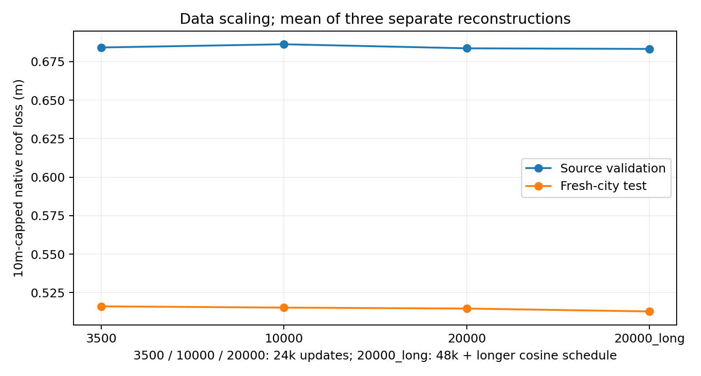
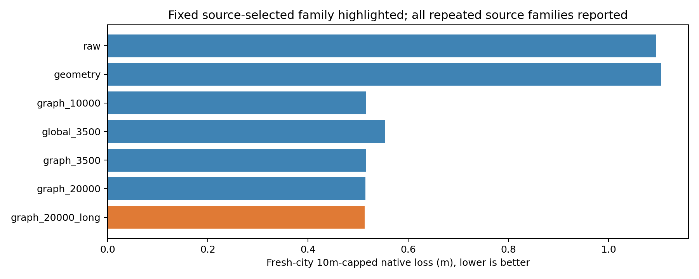

原始基线
全部点直接重建。树木、高点和屋顶点一起进入拟合。
研究进展 / 2026.10
在相同的几何重建流程中，比较原始点云、规则筛点与深度学习筛点。
正在读取冻结结果…
01 / 方法
全部点直接重建。树木、高点和屋顶点一起进入拟合。
检查局部平面、法向与邻域支持，剔除缺乏屋面支撑的点。
逐点特征结合整栋建筑的全局信息，预测每个点是否保留。
增加 16 邻点之间的几何关系，再结合全局信息筛点。
全局网络：共享逐点编码 → 全局最大池化 → 拼接局部与全局特征 → 保留概率。图网络：两层邻域边特征 → 局部最大聚合 → 全局上下文 → 保留概率。输入为归一化 XYZ 与相对地面的高度，当前主模型不输入影像。
3.5k 与 20k 图网络采用同一基础架构；20k 长训练同时增加训练建筑数和步数，不能把差异全部归因于数据量。网络只筛点，屋面由后续几何算法生成。
美国早期试验另含光学 MLP：R、G、NIR、NDVI 与纹理特征，以及几何／光学特征融合。它与这里的全局／图网络属于不同阶段，结果分开查看。
02 / 结果
200 栋 × 12 条件＝2,400 个结果。DL 均用原有固定 seed 1；主模型由源域验证预选。
| 方法 | 主损失 m 越低越好 | 屋脊 F1 ↑ | LoD2 成功 | 干净输入受损 |
|---|
主损失含失败与缺覆盖的 10 m 罚分，非普通 MAE。F1 在共同的 111 栋有屋脊参考建筑上计算；干净输入受损指相对 raw 恶化超过 2 cm，分母 200 栋。
学习筛点有效。正在读取比较…
扩数据的增益较小。正在读取比较…
真实迁移仍有风险。荷兰真实点云探针删除了 3,492 / 37,199 个建筑类别点；这是生产分类标签下的风险信号，不能当作独立误删率。


测试点云来自自动 3DBAG 屋面采样，再加入稀疏、遮挡与树冠形态干扰。参考与标签同源，足迹和地面高度为共同先验；真实航拍仅供目视核对。受控结果不能直接代表 NAIP＋3DEP 的美国精度。
主模型仍有 31 / 2,400 个原生失败或回退，与 raw 数量相同；局部条件仍会退化，屋脊也可能丢失。模型没有产生新的观测点，完整屋顶补全与 RGB 联合建模仍待验证。
展开后读取诊断…
03 / 三维对照
正在载入三维对照…
配准后原始基线：全部点重建。几何筛点：局部规则过滤。点云 MLP：34 维几何特征分类。光学 MLP：8 维 R/G/NIR、NDVI 和纹理特征分类。特征融合：几何与光学特征分别编码后拼接分类。几何＋融合：结合规则筛点与融合分类器。源域监督来自 ISPRS Vaihingen，美国区域没有独立屋顶 GT。
04 / 数据